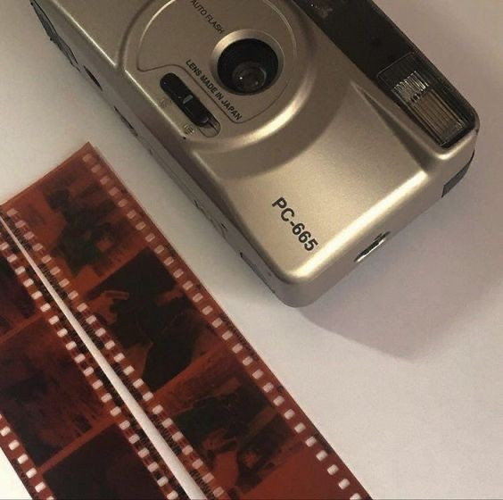
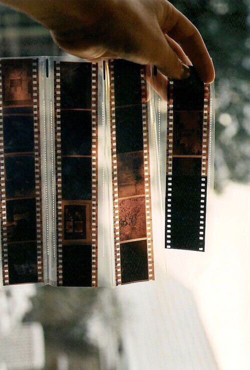
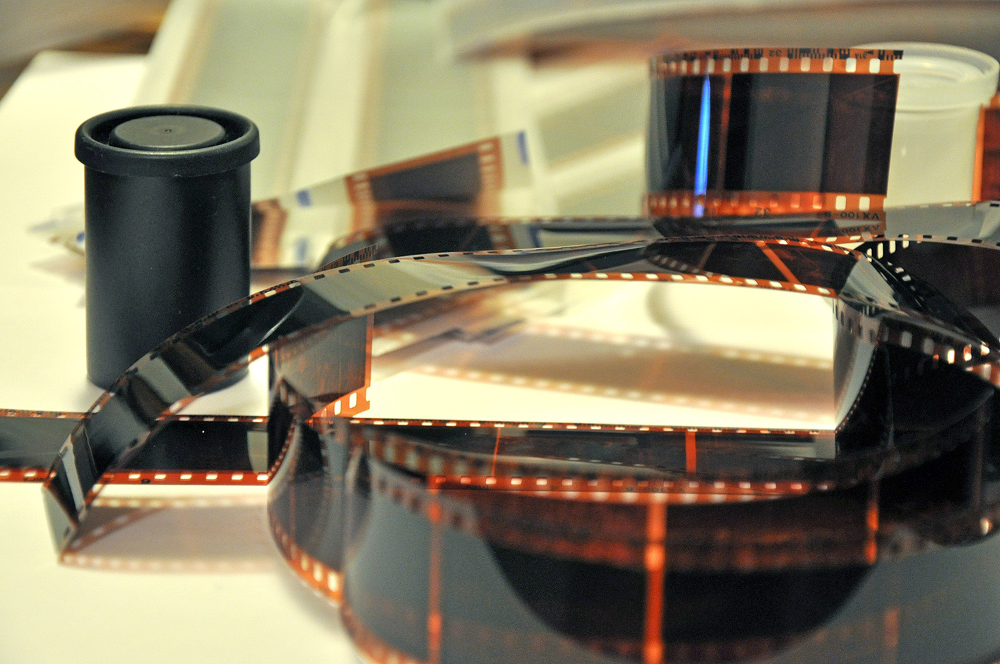
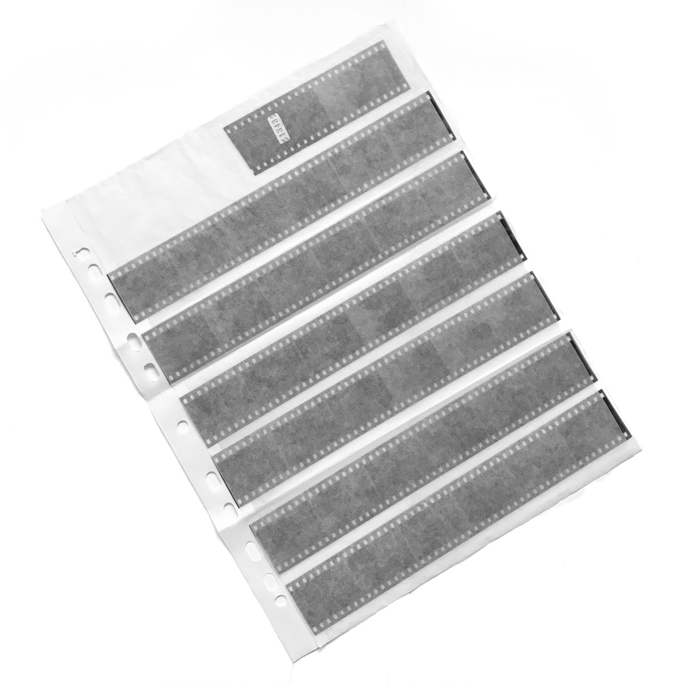
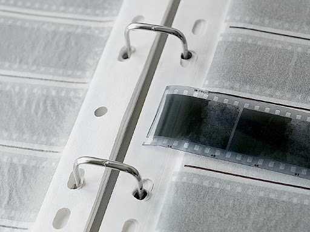

Как хранить проявленную фотопленку

Пока плёнка в ролике, она занимает мало места. Но после проявки этот метр небрежно скрученного
целлулоида по настоящему напрягает

Я знаю, что проявленную фотоплёнку хранят не все. Отсканировал и оставил в фотолаборатории. А зря!
В хранении своего фотоархива в плёнке состоит одна из краеугольных идей плёночной фотографии. Потому
что, как бы это парадоксально ни звучало, такой способ хранения надежнее.
Когда вам отдают проявленную фотоплёнку в конверте, это выглядит довольно симпатично. Но такая форма
хранения своих плёнок совсем не годится если ваш архив переваливает за десяток. Конверты начинают выживать
остальные вещи с полки шкафа и выглядят неряшливо. Сейчас мой архив приближается к 50 плёнкам. А я знаю
людей, кто хранит пленки сотнями! Тут уже впору отводить им отдельную комнату.
Расскажу как хранить плёнку удобно, безопасно и компактно. Не обязательно сожительствовать с конвертами
плёнки. Можно хранить фотоплёнку цивилизованным способом: в сливерах (принт-файлах).

Сливер — это прозрачный полиэтиленовый принт-файл для хранения плёнки. Нарезав 35-мм плёнку на куски
по 6 кадров, вы уместите одну плёнку в один сливер
Сливеры, подобно канцелярским файлам, подшиваются в канцелярские папки

В одну папку можно уместить до 100 плёнок! И потом поставить эту папку на книжную полку.
В сливере фотоплёнка не пылится, не выцветает, не мнётся и не царапается. Я знаю, что есть фотографы,
кто хранит фотоплёнку в пластиковой баночке от ролика туго скрученной. Так лучше с плёнкой не поступать.
Она царапается и её сложно потом заряжать в сканер. Сливеры стоят сущие копейки, чтобы на этом экономить.
Храните фотоплёнку в сливерах. Это правильно!